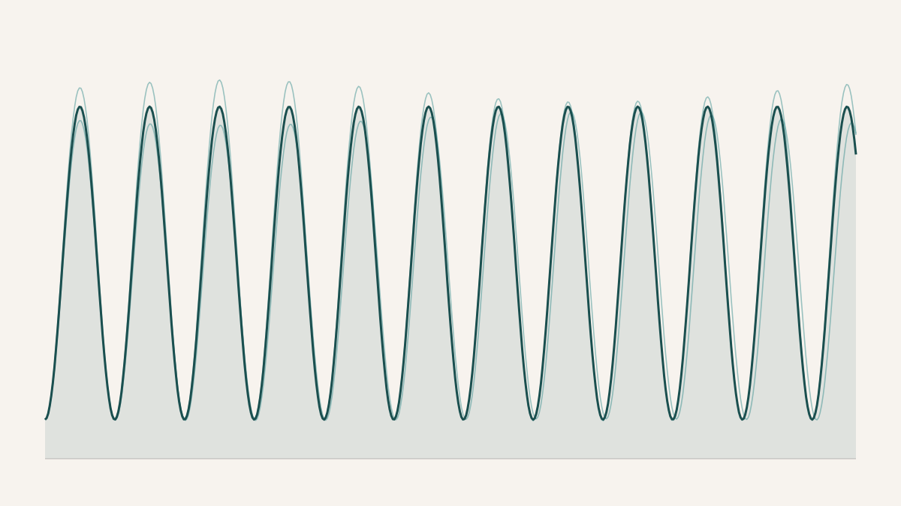

Does a Faster Spin Make a Better Turn?
A ballet turn is a physics problem wearing a costume. When a dancer executes a chaîné — a line of quick, continuous half-turn steps travelling across the floor — she is a rotating body governed by the conservation of angular momentum, and the speed she carries into each turn is set at the instant of push-off, when her foot pushes against the floor to generate the twist. The harder she can push without slipping, the faster she can spin, and how hard she can push depends on the friction the floor gives back. Which raises a concrete question a student I was working with — a trained dancer — wanted to answer with her own feet: does the floor decide how well you turn? She taped a phone to her waist and went looking.
The instrument is almost the whole charm of the thing. A modern smartphone contains a gyroscope good enough to record how fast it is rotating, a hundred times a second, and a free physics app will stream that out to a spreadsheet. Belted firmly at the waist, the phone captures the dancer's angular velocity through an entire ten-second run of turns — a signal that rises to a sharp peak during each single-leg spin and drops to a trough at each step between turns, over and over down the diagonal. Add up that angular velocity over the ten seconds and you have counted her rotations without a motion-capture lab or a force plate in sight. She ran the same ten-second sequence on three surfaces: plain sprung hardwood, the same wood dusted with rosin — a sticky pine resin dancers have used for a century to keep from slipping — and Marley, the vinyl floor that is the international standard for professional performance. The physics makes a clean prediction. Rosin raises friction, more friction allows a bigger push-off, a bigger push-off means more angular impulse, so rosin should produce the fastest turns.
And it did. Averaged across its trials, the rosin surface gave the highest spin speed and the greatest number of turns, just as the friction argument says it should. If you stopped at that number — the mean — the study would read as a tidy confirmation: rosin wins, use rosin. But the mean, it turns out, was the least trustworthy number in the whole experiment.
Each dot is one trial; the bar is the surface's average. Rosin has the highest mean spin speed, but its three trials scatter widely — one ran far above the other two, and it is that outlier doing most of the work of lifting the average. Wood and Marley sit lower but land in almost the same place every time. The highest mean belongs to the least repeatable surface.
Look at the spread and the story changes. Rosin's advantage over the other two surfaces was small to begin with — about five per cent in speed, which works out to roughly a third of an extra turn across ten seconds — and it came at the cost of being wildly inconsistent. The three rosin trials varied six to eight times more than the trials on either other surface; one run sat far above the others and dragged the average up with it. Marley, by contrast, essentially tied plain wood on the mean and beat everything on steadiness: its trials landed in nearly the identical place each time. So the two summaries point in opposite directions. The average says rosin is best. The variance says Marley is, and it is Marley that professionals actually dance on — not because it spins you fastest, which it doesn't, but because it does the same thing under your feet every single night.
That is the reframing the study quietly forces, and I think it is the real finding. For a performer, a surface that occasionally grants a brilliant turn and occasionally turns treacherous is worse than useless — the whole value of a floor is that you can stop thinking about it. Consistency is the property a professional surface is chosen for, and consistency is precisely the property a mean is built to discard. The instability of rosin even has a tidy physical explanation: rosin wears off and transfers onto the shoe unevenly from one run to the next, so the friction it provides keeps drifting, sitting somewhere between the two classic failure modes of a dance floor — too slippery and too sticky — without settling on either. The number that captured the interesting behaviour of these floors was never the average speed. It was the scatter around it.
I have to be honest about how fragile even that is, because the caveats here are not footnotes — they are half the point. This was a single dancer, three trials per surface, and the dancer was the investigator herself, who knew exactly which floor she expected to win and could easily, without meaning to, have pushed a little harder on it. The three surfaces were tested on different days in a fixed order, so fatigue and warm-up are tangled up with the floor. Marley was measured in an entirely different studio, on a different subfloor, in a different room at a different temperature. And the friction of the three surfaces was never actually measured — the whole friction-to-speed argument is inferred from the spin data, not demonstrated against it. Any one of those confounds could manufacture a five-per-cent bump on its own. What does not survive this pile of qualifications is the headline "rosin is fastest"; that claim is far too delicate to lean on. What does survive is smaller and sturdier: a phone belted to a waist really can resolve a dancer's turns cleanly enough to study, and even in a tiny, noisy, thoroughly confounded dataset, the spread carried a more honest signal than the average did.
So the tempting result — rosin wins — was also the least trustworthy thing the experiment produced, and the humble one underneath it is worth more. The lesson generalises past ballet: the first number you reach for, the average, is frequently the one that replicates worst, and the variation you were about to smooth away is sometimes the measurement that actually means something. The professional dancers had already worked this out in their feet, choosing the floor that behaves the same way every time over the floor that occasionally spins a little faster. The gyroscope did not discover anything they didn't know. It just wrote down, in radians per second, why they were right.
An honest caveat that should go before any stronger claim
This is an exploratory, single-subject study, and its numbers cannot bear weight. One dancer performed three ten-second trials on each surface — far too few for any real statistics — and because she was also the investigator and knew the hypothesis, unconscious effort bias cannot be ruled out. The surfaces were tested in a fixed order across separate days, confounding floor with fatigue and learning; Marley was tested in a different studio whose subfloor, size, and temperature were uncontrolled; the rosin was applied by hand in an unmeasured amount and not renewed between trials; and the shoe-floor friction coefficients that the entire mechanism rests on were never measured, only assumed. The waist-mounted sensor also slightly overstates pure spin by folding in a couple of per cent of off-axis sway, though that offset applies equally across surfaces and does not affect the comparison. The right next study is obvious and was the point of running this one: multiple dancers of different levels, a counterbalanced surface order in a single shared studio, and a force plate recording the push-off directly so the friction hypothesis can be tested rather than inferred. Read as a feasibility demonstration and a hypothesis generator, the work stands. Read as a verdict on dance floors, it does not, and does not claim to.